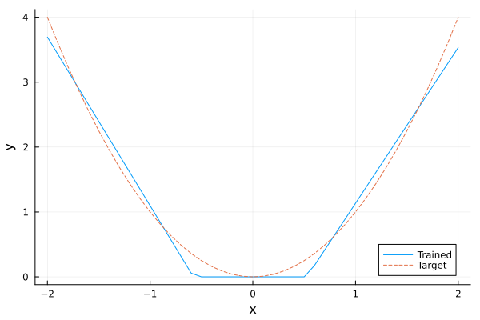
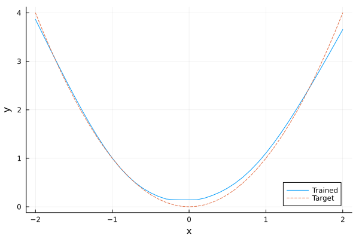

Input Convex Neural Networks with PyTorch
This tutorial shows how to embed an input convex neural network (ICNN) model from PyTorch into JuMP.
See Input Convex Neural Networks with Flux.jl for the equivalent tutorial using Flux.jl.
To use PyTorch from MathOptAI, you must first follow the Python integration instructions.
Required packages
This tutorial requires the following packages
using JuMPimport HiGHSimport Ipoptimport MathOptAIimport Plotsimport PythonCallimport SCSBuilding the ICNN
Consider a neural network with the following structure:
\[\begin{aligned} z_1 & = \sigma_1(D_1 x + b_1) \\ z_k & = \sigma_k(W_{k-1} z_{k-1} + b_k + D_k x), \ \forall k = 2, \ldots, K \end{aligned}\]
If the weights $W$ are non-negative and $\sigma$ is a convex activation function then the output of the network $z_K$ is convex with respect to $x$, and we say that the network is an Input Convex Neural Network (ICNN).
The following custom layer can be used to build ICNNs. This layer has two forward methods. One that takes a single input and the other takes a Tuple. They both return the result of the forward pass as well as the original input.
dir = mktempdir()write( joinpath(dir, "icnn.py"), """ import math import torch class InputConvex(torch.nn.Module): def __init__(self, dim_z: int, dim_x: int, dim_out: int): super().__init__() self.dim_z = dim_z self.dim_x = dim_x self.dim_out = dim_out self.W = torch.nn.parameter.Parameter(torch.empty((dim_out, dim_z))) torch.nn.init.kaiming_uniform_(self.W, a=math.sqrt(5)) self.D = torch.nn.parameter.Parameter(torch.empty((dim_out, dim_x))) torch.nn.init.kaiming_uniform_(self.D, a=math.sqrt(5)) self.b = torch.nn.parameter.Parameter(torch.empty(dim_out)) torch.nn.init.normal_(self.b) return def forward(self, z, x): return z @ torch.nn.functional.softplus(self.W).T + x @ self.D.T + self.b class InputConvexChain(torch.nn.Module): def __init__(self, *layers): super(InputConvexChain, self).__init__() self.layers = torch.nn.ModuleList(layers) def forward(self, x): z = x for layer in self.layers: z = layer(z, x) if isinstance(layer, InputConvex) else layer(z) return z """,)filename = joinpath(dir, "icnn.pt")"/tmp/jl_qbKpiv/icnn.pt"Next, we import the network and the layers using PythonCall.@pyexec:
predictor, InputConvex, InputConvexChain = PythonCall.@pyexec( (dir, filename) => """ import torch from torch.nn import ReLU import sys sys.path.insert(0, dir) from icnn import InputConvexChain, InputConvex predictor = InputConvexChain( torch.nn.Linear(8, 2), ReLU(), InputConvex(dim_z=2, dim_x=8, dim_out=1), ReLU(), ) torch.save(predictor, filename) """ => (predictor, InputConvex, InputConvexChain))(predictor = <py InputConvexChain(
(layers): ModuleList(
(0): Linear(in_features=8, out_features=2, bias=True)
(1): ReLU()
(2): InputConvex()
(3): ReLU()
)
)>, InputConvex = <py class 'icnn.InputConvex'>, InputConvexChain = <py class 'icnn.InputConvexChain'>)Let's test the ICNN:
torch = PythonCall.pyimport("torch")predictor(torch.rand(8))Python: tensor([0.4674], grad_fn=<ReluBackward0>)Building the Predictor
To embed InputConvexChain into JuMP, we create the following callback function:
_array(x) = PythonCall.pyconvert(Array{Float64}, x.detach().cpu().numpy())function icnn_callback(icnn::PythonCall.Py; input_size, kwargs...) softplus = MathOptAI.SoftPlus() p = MathOptAI.Pipeline(Any[]) for layer in icnn.layers if PythonCall.pyisinstance(layer, InputConvex) w = [softplus.(_array(layer.W)) _array(layer.D)] push!(p.layers, MathOptAI.Affine(w, _array(layer.b))) else push!(p.layers, MathOptAI.build_predictor(layer; kwargs...)) end end return InputConvexChainPredictor(p)endicnn_callback (generic function with 1 method)In addition, we need to implement and add_predictor for InputConvexChain in order to be able to embed this network into JuMP. For this purpose, we define InputConvexChainPredictor and implement add_predictor:
struct InputConvexChainPredictor <: MathOptAI.AbstractPredictor p::MathOptAI.Pipelineendfunction MathOptAI.add_predictor( model::JuMP.AbstractModel, predictor::InputConvexChainPredictor, x::Vector; kwargs...,) layers = predictor.p.layers z, inner = MathOptAI.add_predictor(model, first(layers), x; kwargs...) formulation = MathOptAI.PipelineFormulation(predictor, Any[inner]) for layer in layers[2:end] z, inner = if layer isa MathOptAI.Affine MathOptAI.add_predictor(model, layer, [z; x]; kwargs...) else MathOptAI.add_predictor(model, layer, z; kwargs...) end push!(formulation.layers, inner) end return z, formulationendWith that, we are now ready to embed these networks into JuMP.
Embed ICNN into JuMP
We can now embed predictor into a JuMP model. We choose to embed the nn.ReLU predictor using ReLUSOS1:
model = Model()@variable(model, x[1:8])config = Dict(:ReLU => MathOptAI.ReLUSOS1, InputConvexChain => icnn_callback)z, formulation = MathOptAI.add_predictor(model, predictor, x; config);z1-element Vector{JuMP.VariableRef}:
moai_ReLU[1]formulationAffine(A, b) [input: 8, output: 2]
├ variables [2]
│ ├ moai_Affine[1]
│ └ moai_Affine[2]
└ constraints [2]
├ 0.1635185182094574 x[1] - 0.2880118191242218 x[2] + 0.2766822576522827 x[3] + 0.041182905435562134 x[4] - 0.3307567536830902 x[5] - 0.15036873519420624 x[6] - 0.20866908133029938 x[7] + 0.2222246527671814 x[8] - moai_Affine[1] = 0.3188745081424713
└ -0.26049166917800903 x[1] - 0.10622864216566086 x[2] - 0.0707043707370758 x[3] - 0.27937525510787964 x[4] + 0.10587523877620697 x[5] + 0.08552050590515137 x[6] + 0.10682965815067291 x[7] - 0.05718117579817772 x[8] - moai_Affine[2] = -0.17322278022766113
MathOptAI.ReLUSOS1()
├ variables [4]
│ ├ moai_ReLU[1]
│ ├ moai_ReLU[2]
│ ├ moai_z[1]
│ └ moai_z[2]
└ constraints [8]
├ moai_ReLU[1] ≥ 0
├ moai_z[1] ≥ 0
├ moai_Affine[1] - moai_ReLU[1] + moai_z[1] = 0
├ [moai_ReLU[1], moai_z[1]] ∈ MathOptInterface.SOS1{Float64}([1.0, 2.0])
├ moai_ReLU[2] ≥ 0
├ moai_z[2] ≥ 0
├ moai_Affine[2] - moai_ReLU[2] + moai_z[2] = 0
└ [moai_ReLU[2], moai_z[2]] ∈ MathOptInterface.SOS1{Float64}([1.0, 2.0])
Affine(A, b) [input: 10, output: 1]
├ variables [1]
│ └ moai_Affine[1]
└ constraints [1]
└ -0.32456347346305847 x[1] + 0.12406586110591888 x[2] - 0.2948547899723053 x[3] + 0.2508064806461334 x[4] + 0.2974930703639984 x[5] + 0.06375490128993988 x[6] + 0.24105320870876312 x[7] - 0.17404009401798248 x[8] + 0.7183607163156109 moai_ReLU[1] + 1.1069384926547323 moai_ReLU[2] - moai_Affine[1] = -0.4470331370830536
MathOptAI.ReLUSOS1()
├ variables [2]
│ ├ moai_ReLU[1]
│ └ moai_z[1]
└ constraints [4]
├ moai_ReLU[1] ≥ 0
├ moai_z[1] ≥ 0
├ moai_Affine[1] - moai_ReLU[1] + moai_z[1] = 0
└ [moai_ReLU[1], moai_z[1]] ∈ MathOptInterface.SOS1{Float64}([1.0, 2.0])
Epigraph formulations
The nice thing about ICNNs is that we can formulate their epigraph and avoid adding binary variables to the model. For that, we can use ReLUEpigraph.
Let's first train a model to predict the relationship $y = x^2$. (Note that this is a very basic training loop.)
predictor = PythonCall.@pyexec( (dir, filename) => """ import torch from torch.nn import ReLU import sys sys.path.insert(0, dir) from icnn import InputConvexChain, InputConvex torch.manual_seed(61) predictor = InputConvexChain( torch.nn.Linear(1, 10), ReLU(), InputConvex(dim_z=10, dim_x=1, dim_out=1), ReLU(), ) loss_fn = torch.nn.MSELoss() optimizer = torch.optim.SGD(predictor.parameters(), lr=0.01, momentum=.9) predictor.train() X = torch.unsqueeze(torch.arange(-2, 2, step=.1), 1) Y = torch.pow(X, 2) epochs = 200 running_loss = 0. for e in range(epochs): optimizer.zero_grad() Y_hat = predictor(X) loss = loss_fn(Y_hat, Y) loss.backward() optimizer.step() if e % 10 == 9: last_loss = running_loss # loss per batch print(f' batch {e + 1} loss: {loss.item()}') torch.save(predictor, filename) """ => predictor)Python:
InputConvexChain(
(layers): ModuleList(
(0): Linear(in_features=1, out_features=10, bias=True)
(1): ReLU()
(2): InputConvex()
(3): ReLU()
)
)Now we can embed the trained network into a JuMP model:
model = Model(HiGHS.Optimizer)set_silent(model)@variable(model, x[1:1])config = Dict(:ReLU => MathOptAI.ReLUEpigraph, InputConvexChain => icnn_callback)y, _ = MathOptAI.add_predictor(model, predictor, x; config)@objective(model, Min, only(y))modelA JuMP Model
├ solver: HiGHS
├ objective_sense: MIN_SENSE
│ └ objective_function_type: JuMP.VariableRef
├ num_variables: 23
├ num_constraints: 33
│ ├ JuMP.AffExpr in MOI.EqualTo{Float64}: 11
│ ├ JuMP.AffExpr in MOI.GreaterThan{Float64}: 11
│ └ JuMP.VariableRef in MOI.GreaterThan{Float64}: 11
└ Names registered in the model
└ :xBecause we used the ReLUEpigraph predictor, there are no binary or integer variables in our model.
Moreover, we can show that the objective value y is convex with respect to x:
x_value, y_value = -2:0.1:2, Float64[]for xi in x_value fix(x[1], xi) optimize!(model) # To prove we are solving an LP and not a MIP, require dual solutions. assert_is_solved_and_feasible(model; dual = true) push!(y_value, objective_value(model))endPlots.plot(x_value, y_value; xlabel = "x", ylabel = "y", label = "Trained")Plots.plot!(x_value, x_value .^ 2; label = "Target", linestyle = :dash)
Conic Formulation
Now, let us replace the activation functions with Softplus.
predictor = PythonCall.@pyexec( (dir, filename) => """ import torch from torch.nn import ReLU, Softplus import sys sys.path.insert(0, dir) from icnn import InputConvexChain, InputConvex torch.manual_seed(61) predictor = InputConvexChain( torch.nn.Linear(1, 10), ReLU(), InputConvex(dim_z=10, dim_x=1, dim_out=1), Softplus(), ) loss_fn = torch.nn.MSELoss() optimizer = torch.optim.SGD(predictor.parameters(), lr=0.01, momentum=.9) predictor.train() X = torch.unsqueeze(torch.arange(-2, 2, step=.1), 1) Y = torch.pow(X, 2) epochs = 200 running_loss = 0. for e in range(epochs): optimizer.zero_grad() Y_hat = predictor(X) loss = loss_fn(Y_hat, Y) loss.backward() optimizer.step() if e % 10 == 9: last_loss = running_loss # loss per batch print(f' batch {e + 1} loss: {loss.item()}') torch.save(predictor, filename) """ => predictor)Python:
InputConvexChain(
(layers): ModuleList(
(0): Linear(in_features=1, out_features=10, bias=True)
(1): ReLU()
(2): InputConvex()
(3): Softplus(beta=1.0, threshold=20.0)
)
)Next, we use SoftPlusConicEpigraph to embed this new network into a conic formulation.
model = Model(SCS.Optimizer)set_silent(model)@variable(model, x[1:1])config = Dict( :ReLU => MathOptAI.ReLUEpigraph, :SoftPlus => MathOptAI.SoftPlusConicEpigraph, InputConvexChain => icnn_callback,)y, _ = MathOptAI.add_predictor(model, predictor, x; config)@objective(model, Min, only(y))modelA JuMP Model
├ solver: SCS
├ objective_sense: MIN_SENSE
│ └ objective_function_type: JuMP.VariableRef
├ num_variables: 25
├ num_constraints: 34
│ ├ JuMP.AffExpr in MOI.EqualTo{Float64}: 11
│ ├ JuMP.AffExpr in MOI.GreaterThan{Float64}: 10
│ ├ JuMP.AffExpr in MOI.LessThan{Float64}: 1
│ ├ Vector{JuMP.AffExpr} in MOI.ExponentialCone: 2
│ └ JuMP.VariableRef in MOI.GreaterThan{Float64}: 10
└ Names registered in the model
└ :xNow, we can check the fit and compare with ReLU.
x_value, y_value = -2:0.1:2, Float64[]for xi in x_value fix(x[1], xi) optimize!(model) # To prove we are solving an LP and not a MIP, require dual solutions. assert_is_solved_and_feasible(model; dual = true) push!(y_value, objective_value(model))endPlots.plot(x_value, y_value; xlabel = "x", ylabel = "y", label = "Trained")Plots.plot!(x_value, x_value .^ 2; label = "Target", linestyle = :dash)Nonlinear Formulation
We can also use SoftPlusEpigraph in the activation functions. The resulting global nonlinear formulation can be solved using Ipopt or any other nonlinear solver.
model = Model(Ipopt.Optimizer)set_silent(model)@variable(model, x[1:1])config = Dict( :ReLU => MathOptAI.ReLUEpigraph, :SoftPlus => MathOptAI.SoftPlusEpigraph, InputConvexChain => icnn_callback,)y, _ = MathOptAI.add_predictor(model, predictor, x; config)@objective(model, Min, only(y))modelA JuMP Model
├ solver: Ipopt
├ objective_sense: MIN_SENSE
│ └ objective_function_type: JuMP.VariableRef
├ num_variables: 23
├ num_constraints: 33
│ ├ JuMP.NonlinearExpr in MOI.GreaterThan{Float64}: 1
│ ├ JuMP.AffExpr in MOI.EqualTo{Float64}: 11
│ ├ JuMP.AffExpr in MOI.GreaterThan{Float64}: 10
│ └ JuMP.VariableRef in MOI.GreaterThan{Float64}: 11
└ Names registered in the model
└ :xLet's draw the same plot to see the differences in fit with softplus.
x_value, y_value = -2:0.1:2, Float64[]for xi in x_value fix(x[1], xi) optimize!(model) # To prove we are solving an LP and not a MIP, require dual solutions. assert_is_solved_and_feasible(model; dual = true) push!(y_value, objective_value(model))endPlots.plot(x_value, y_value; xlabel = "x", ylabel = "y", label = "Trained")Plots.plot!(x_value, x_value .^ 2; label = "Target", linestyle = :dash)
This page was generated using Literate.jl.